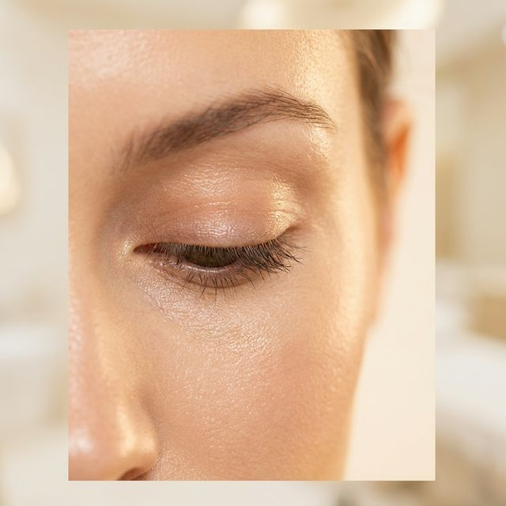
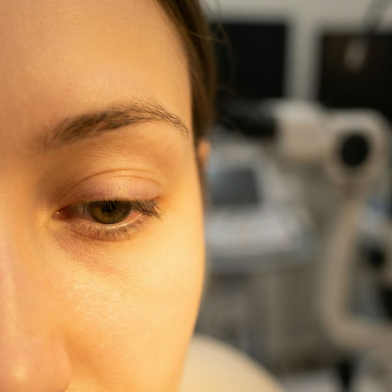
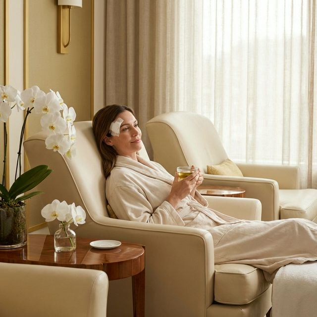

Excelência Médica encontra o
Despertar.
O despertar de um olhar mais jovem e revitalizado. Remoção cirúrgica precisa do excesso de pele e bolsas de gordura da pálpebra superior.
Excelência Médica encontra o
O despertar de um olhar mais jovem e revitalizado. Remoção cirúrgica precisa do excesso de pele e bolsas de gordura da pálpebra superior.
Avaliação detalhada da estrutura palpebral, análise fotográfica e planejamento personalizado do seu procedimento.
Cirurgia com anestesia local e sedação. Incisões precisas nas dobras naturais, garantindo cicatrizes imperceptíveis.
Olhar renovado e natural em poucas semanas. Retorno social em 7 dias com acompanhamento contínuo da equipe.
A maioria das clínicas foca apenas na remoção de tecido.
Remoção cuidadosa do excesso de pele e pequenas bolsas de gordura. A incisão é matematicamente posicionada na dobra natural do olho, tornando a cicatriz imperceptível.

Tratamento das bolsas de gordura. Muitas vezes realizado pela técnica transconjuntival, garantindo a ausência total de cicatrizes externas e recuperação relâmpago.

Acompanhamento contínuo no pós-operatório estruturado para garantir cicatrização acelerada, minimizando edema e equimose.

Resultados reais alcançados com o nosso protocolo de Blefaroplastia.
*CÓDIGO DE ÉTICA MÉDICA: Resultados ilustrativos. A anatomia humana é individual.